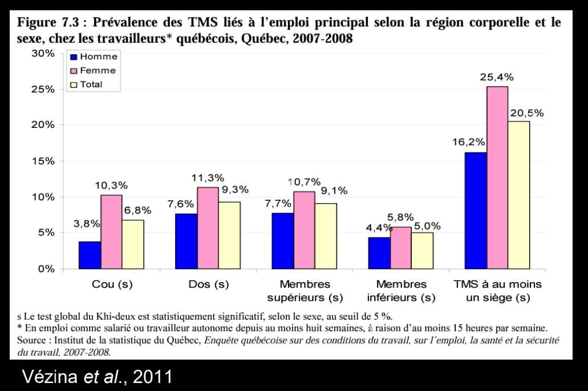
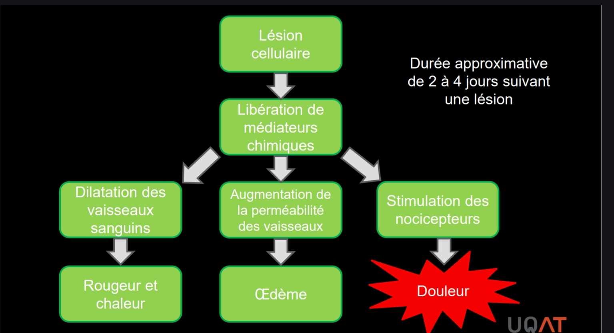
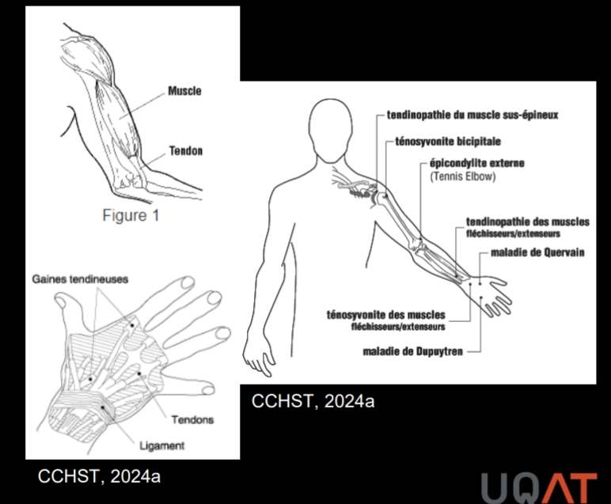
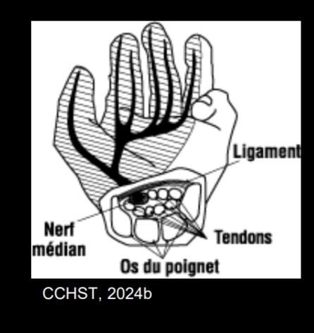
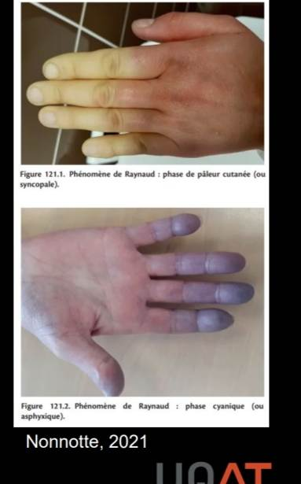
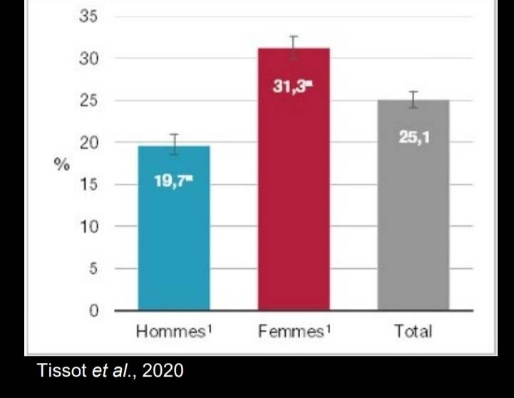

TMS (troubles musculosquelettiques)
Les troubles musculosquelettiques (TMS) liés au travail sont un ensemble de symptômes et de lésions inflammatoires ou dégénératives de l'appareil locomoteur (cou, dos, membres supérieurs et inférieurs) perçus comme partiellement ou complètement liés à l'emploi. Au Québec, un travailleur sur quatre souffre de TMS d'origine non traumatique liés au travail. C'est l'enjeu central de l'ergonomie physique.
Table des matières
- Définition
- Caractéristiques
- Types de TMS
- Évolution et stades
- Statistiques au Québec
- Distinction TMS et accidents
- Application terrain
- Ressources
Définition
Un TMS lié au travail est défini comme un ensemble de symptômes et de lésions inflammatoires ou dégénératives de l'appareil locomoteur du cou, du dos, des membres supérieurs et des membres inférieurs, perçus comme étant liés partiellement ou complètement à l'emploi principal.
Termes similaires utilisés dans la littérature
- Lésion musculosquelettique.
- Lésion attribuable au Travail répétitif (LATR).
- Affections musculosquelettiques.
Les TMS représentent un ensemble de troubles de natures variées qui peuvent toucher
- Muscles.
- Tendons.
- Nerfs.
- Articulations et bourses.
- Vaisseaux sanguins.

Toucher l'image pour l'agrandirCaractéristiques
| Caractéristique | Description |
|---|---|
| Symptômes similaires | Douleurs et troubles fonctionnels |
| Liés à la surutilisation | Demande de travail > capacité d'adaptation des tissus |
| Causes multifactorielles | Combinaison de facteurs, pas une cause unique |
| Apparition progressive | Se développent par répétition de la surutilisation avec récupération insuffisante |
Voir Système musculaire pour les bases physiologiques de la fatigue et des microlésions.
Types de TMS
Quatre grandes catégories selon la nature de l'atteinte.
Troubles inflammatoires
Les maladies en "ite". La réaction inflammatoire est un processus normal qui suit une lésion.

Toucher l'image pour l'agrandir| Trouble | Atteinte |
|---|---|
| Tendinite (tendinopathie) | Inflammation d'un tendon |
| Ténosynovite | Inflammation d'une gaine synoviale |
| Bursite | Inflammation d'une bourse séreuse |

Toucher l'image pour l'agrandirTroubles musculaires
Les contractions maintenues ou répétées génèrent des microdéchirures musculaires. L'exposition chronique sans récupération adéquate génère
- Contractures.
- Inflammation.
- Modifications cellulaires.
Exemples : syndrome de tension cervicale (cervicalgie), lombalgie.
Troubles de compression nerveuse
Atteintes des nerfs secondaires à une compression (neuropathie). Fréquentes là où les nerfs passent à proximité de plusieurs tendons.
- Syndrome du tunnel carpien (nerf médian au poignet).
La compression peut être secondaire à un œdème (inflammation des tendons voisins) ou à la dégénérescence des structures avoisinantes (hernie discale).

Toucher l'image pour l'agrandirTroubles vasculaires
Résultent d'une ischémie aux structures atteintes.
- Compression de gros vaisseaux (syndrome du marteau hypothénarien).
- Fermeture temporaire des capillaires (syndrome de Raynaud).
Principaux facteurs de risque : compressions, chocs ou vibrations répétés.

Toucher l'image pour l'agrandirÉvolution et stades
Les symptômes des TMS apparaissent généralement de façon progressive. Quand la maladie est bien déclarée, il est déjà tard pour intervenir.
| Stade | Symptômes |
|---|---|
| Stade 1 | Douleur et sensibilité pendant le travail, disparaissant au repos |
| Stade 2 | Douleur et sensibilité dès le début du travail, persistant plus longtemps; perturbation du sommeil; baisse de rendement |
| Stade 3 | Douleur persistant lors d'autres activités et au repos; incapacité fonctionnelle importante; semaines à mois |
Approche temporelle alternative
- Aiguë : 0 à 6 semaines.
- Subaiguë : 6 à 12 semaines.
- Chronique : plus de 12 semaines.
L'objectif est de prévenir la chronicisation en intervenant tôt (voir Prévention des TMS).
Statistiques au Québec
| Indicateur | Valeur |
|---|---|
| Travailleurs s'absentant annuellement à cause de TMS | 7,3 % |
| Part des lésions professionnelles indemnisées (TMS non traumatiques) | environ 1/3 |
| Travailleurs québécois souffrant de TMS non traumatiques liés au travail | 1 sur 4 (25 %) |
| Travailleurs ressentant des douleurs liées à l'emploi | environ 50 % |

Toucher l'image pour l'agrandirLes TMS représentent l'une des principales causes d'absentéisme et d'invalidité au Québec.
Distinction TMS et accidents
- Accident du travail : événement imprévu et soudain (ex. entorse à la cheville résultant d'une chute).
- TMS : souvent lié aux tâches normales de travail, apparition progressive.
La législation québécoise reconnaît les TMS à titre de maladies professionnelles, mais aussi comme conséquences d'un accident du travail (cas d'un soulèvement unique provoquant une hernie). Voir le wiki Droit du travail pour le cadre LATMP-LMRSST.
Application terrain
Le secteur minier est l'un des secteurs où les TMS sont les plus fréquents et les plus coûteux.
Postes typiquement à risque
| Poste | TMS fréquents |
|---|---|
| Foreur, profil RPS et leadership de chantier jumbo | Épaule, coude, poignet, cervical |
| Aide-foreur, profil RPS, chargeur d'explosifs | Lombaire, épaule |
| Boulonneur | Épaule, cervical, poignet |
| Opérateur chargeuse / camion | Lombaire (Vibrations + assise prolongée) |
| Mécanicien d'entretien | Épaule, poignet, dos |
| Opérateur de concentrateur | Membre supérieur (répétitif) |
Facteurs aggravants en mine
- Quarts de 12 h (fatigue cumulée).
- Rotations FIFO et travail à horaires atypiques (récupération réduite).
- Vibrations omniprésentes (cofacteur direct).
- Froid (hivers, certains chantiers ventilés).
- Postures contraignantes en chantier souterrain (espaces restreints, sol inégal).
Programme typique de gestion des TMS en mine
- Surveillance via questionnaire nordique (voir Outils d'évaluation ergonomique).
- Comité paritaire SST chargé de la priorisation.
- Analyse ergonomique des postes prioritaires (voir Démarche d'analyse ergonomique).
- Programme de retour au travail (voir wiki psychosociale frère pour le volet retour au travail).
Ressources
| Document | Type | Source |
|---|---|---|
| Cours SST 1162 - S3 - Intro aux TMS | Cours | UQAT |
| Statistiques annuelles CNESST, rôles et pouvoirs sur les lésions | Rapport | CNESST |
| Questionnaire nordique standardisé | Outil | Kuorinka et al., 1987 |
Articles wiki connexes
Pages qui pointent ici (35)
- 🏠 Wiki Ergonomie, mines Ergonomie
- 📖 Glossaire ergonomie Ergonomie
- 🚀 Démarrage rapide - Conseiller SST, ergonome Ergonomie
- 🚀 Démarrage rapide - Direction, RH Ergonomie
- Analyse de l'activité de travail Ergonomie
- Analyse posturale Ergonomie
- Anatomie et biomécanique du dos Ergonomie
- art-166-RSST Ergonomie
- Articulations Ergonomie
- Conception ergonomique du poste Ergonomie
- Démarche AREC Hygiène industrielle
- Démarche d'intervention corrective Ergonomie
- Domaines de l'ergonomie Ergonomie
- Ergonomie (définition) Ergonomie
- Ergonomie du travail Ergonomie
- Évaluation des risques de TMS Ergonomie
- Évaluation et surveillance ergonomique Ergonomie
- Facteurs de risque des TMS Ergonomie
- Horaires de travail atypiques Ergonomie
- Intervention ergonomique Ergonomie
- Manutention (pour toi) Ergonomie
- Manutention manuelle Ergonomie
- Outils d'évaluation ergonomique Ergonomie
- Postures contraignantes Ergonomie
- Prévention des TMS Ergonomie
- Programme de prévention TMS Ergonomie
- Programme manutention Ergonomie
- Système musculaire Ergonomie
- Système musculosquelettique Ergonomie
- TMS Ergonomie
- TMS par région anatomique Ergonomie
- Travail répétitif Ergonomie
- Travail répétitif (travailleurs) Ergonomie
- Travail sédentaire Ergonomie
- Vibrations Ergonomie